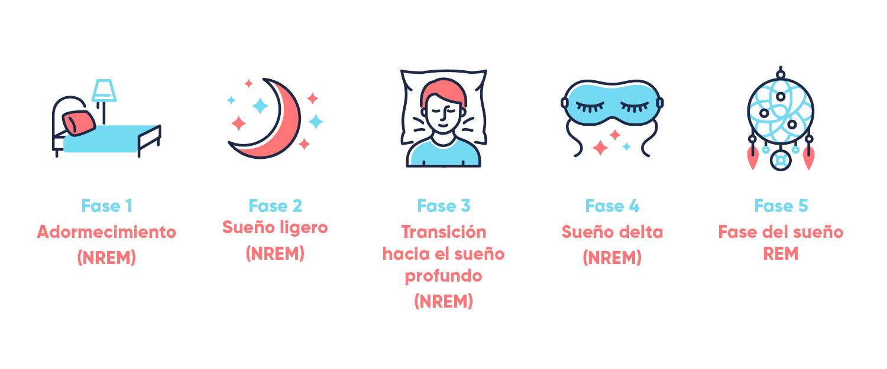

Fases del sueño
Hay cinco fases en un ciclo de sueño:
| Fase 1 | Sueño ligero, movimiento lento de los ojos y actividad muscular reducida. Esta fase constituye del 4% al 5% del sueño total. |
| Fase 2 | El movimiento de los ojos se detiene y las ondas cerebrales se vuelven más lentas, con ráfagas ocasionales de ondas rápidas llamadas husos del sueño. Esta fase constituye del 45% al 55% del sueño total. |
| Fase 3 | Empiezan a aparecer ondas cerebrales extremadamente lentas llamadas ondas delta, intercaladas con ondas más pequeñas y rápidas. Esta fase ocupa del 4% al 6% del sueño total. |
| Fase 4 | El cerebro produce ondas delta casi exclusivamente. Es difícil despertar a alguien durante las etapas 3 y 4, que en conjunto son referidas como «sueño profundo». No hay movimiento ocular o actividad muscular. Las personas que se despiertan durante el sueño profundo suelen sentirse desorientadas durante varios minutos después de despertarse. Esta fase constituye del 12% al 15% del sueño total. |
| Fase 5 | Esta etapa se conoce como movimiento ocular rápido (REM, en inglés). La respiración se vuelve más rápida, irregular y superficial, los ojos se mueven rápidamente en varias direcciones y los músculos de las extremidades se paralizan temporalmente. La frecuencia cardíaca aumenta, la presión arterial aumenta y los hombres desarrollan erecciones de pene. Cuando las personas se despiertan durante el sueño REM, a menudo describen cuentos extraños e ilógicos. Estos son los sueños. Esta fase ocupa del 20% al 25% del sueño total. |
